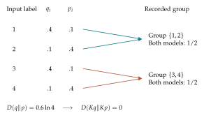

Bring the course together with a discrete continuity equation, a graph Laplacian, and changing entropy.
Information moves on a network
Let \(G=(V,E)\) be a finite undirected graph. A probability distribution places mass \(p_i(n)\geq0\) at each vertex, with total mass one. Give each undirected edge a single orientation for bookkeeping and denote the signed current from \(i\) to \(j\) by \(J_{ij}(n)=-J_{ji}(n)\).
The discrete divergence at a vertex is net outward current, $\(\operatorname{div}J(i)=\sum_{j\sim i}J_{ij}.\)\( Then the conservation law is the discrete continuity equation \)\(\boxed{p_i(n+1)-p_i(n)=-\operatorname{div}J_n(i).}\)$ Add this equation over every vertex. Each edge current cancels with its opposite, so the total probability remains one. This is a finite analogue of the divergence theorem.
A graph gradient and Laplacian
For a scalar field \(f\) on the vertices, the gradient along an oriented edge \(i\to j\) is \(f_j-f_i\). A diffusion current flowing from higher to lower probability can be chosen as $\(J_{ij}=\tau(p_i-p_j),\qquad\tau>0.\)\( Substitution yields \)\(\boxed{p_i(n+1)=p_i(n)+\tau\sum_{j\sim i}(p_j(n)-p_i(n)).}\)\( The sum is a graph Laplacian applied to \)p$. It measures how a vertex differs from its neighbors.
To ensure nonnegative probabilities at every step, choose \(\tau\leq1/d_{\max}\), where \(d_{\max}\) is the largest vertex degree. Then the update matrix is stochastic. Because the graph is undirected, its rows also sum to one, so it is doubly stochastic.
Three vertices, one exact step
On the path \(A\)–\(B\)–\(C\), choose \(\tau=1/4\) and start at \(p_0=(1,0,0)\). The step gives $\(p_1=(3/4,1/4,0).\)\( The next gives \)\(p_2=(5/8,5/16,1/16).\)\( Compute \)\Delta p_0\( and \)\Delta p_1$. In each case the three coordinates sum to zero, because the changes are redistribution. Repeating the update brings the distribution toward the stationary uniform state.
Entropy and the direction of change
Because this symmetric diffusion is doubly stochastic, it does not decrease Shannon entropy: $\(H(p_{n+1})-H(p_n)\geq0.\)\( One way to prove this is to apply the contraction of relative entropy toward the uniform distribution \)u\(. Since \)D(p\|u)=\log|V|-H(p)\( and \)Ku=u\(, \)\(D(Kp\|u)\leq D(p\|u).\)\( Hence \)\Delta H_n\geq0$. The conclusion depends on the doubly stochastic assumption. An arbitrary stochastic channel may lower entropy.
The course's complete mathematical circle
We started with \(\Delta a_n=a_{n+1}-a_n\). Now the same operation measures probability changes, Lyapunov dissipation, and entropy production, while the graph gradient and divergence describe where probability travels. The fundamental theorem for finite differences and the cancellation of internal fluxes explain why discrete conservation laws work.
For the final investigation, choose a small graph and initial probability vector, compute at least four iterations, verify mass conservation, graph fluxes, and changes in Shannon entropy, then compare the limiting behavior with your predictions. Use finite calculations to explain what the mathematics says about information moving across the network.
Further investigations and applications
An observation can be recorded at several resolutions. A detailed label may be replaced by a broader group, passed through a noisy channel, or transported among nodes of a network. These operations transform probability tables by finite weighted sums. They connect graph dynamics with a basic principle of information geometry: applying the same observation rule to two models cannot make them more distinguishable by the discrepancies studied here.
A stochastic matrix describes one step
Let \(K_{ji}\) be the probability of arriving at output label \(j\) from input label \(i\). Our convention places the input in the column. Thus \[K_{ji}\geq0,\qquad \sum_jK_{ji}=1\quad\hbox{for each }i.\] Such a table is column-stochastic. If input probabilities are \(p_i\), the output probabilities are \[p_j^+=\sum_iK_{ji}p_i,\qquad p^+=Kp.\] The product symbol \(Kp\) abbreviates these weighted sums. Adding over \(j\) gives \(\sum_jp_j^+=\sum_ip_i\sum_jK_{ji}=1\). This is a linear difference equation on probability vectors.
Repeated application gives \(p_t=K^tp_0\). A probability vector \(\pi\) is stationary if \(K\pi=\pi\). Stationarity is a fixed-point condition. It does not by itself imply that every trajectory converges to \(\pi\).
Example. A lazy walk on a three-node path
Consider \[K=\begin{pmatrix}3/4&1/4&0\\1/4&1/2&1/4\\0&1/4&3/4\end{pmatrix}.\] Each column describes remaining at a node or moving to a neighbor. Starting at \(p_0=(1,0,0)\) gives \(p_1=(3/4,1/4,0)\) and \(p_2=(5/8,5/16,1/16)\). The uniform table is stationary because the rows, as well as the columns, sum to one. This particular walk approaches uniform, as can be checked from its repeated finite updates.
A matrix whose rows and columns both sum to one is doubly stochastic. The cyclic permutation matrix is also doubly stochastic, but every noncentral three-category state repeats with period three. To establish convergence in a general network, additional conditions are required. Our contraction inequalities below concern one-step comparisons and do not require a claim of convergence.
Coarse-graining is a deterministic channel
Partition the input labels into groups. The output reports only the group containing the input. Set \(K_{ji}=1\) if label \(i\) belongs to group \(j\), and zero otherwise. Each column contains exactly one entry equal to one. The output probabilities are sums over the groups.
Example. A distinction erased by grouping
Let \(q=(0.4,0.1,0.4,0.1)\) and \(p=(0.1,0.4,0.1,0.4)\). Group labels \(1,2\) together and labels \(3,4\) together. Both output distributions are \((1/2,1/2)\). Before grouping, \(D(q\|p)=0.6\ln4\approx0.8318\). After grouping, it is zero. The within-group differences cannot be recovered from the recorded group alone.

The log-sum inequality
Let \(a_i,b_i\) be nonnegative numbers with positive totals \(A=\sum_i a_i\) and \(B=\sum_i b_i\), and suppose \(b_i>0\) wherever \(a_i>0\). Applying Gibbs’ inequality to \(a_i/A\) and \(b_i/B\) gives \[\sum_i a_i\ln\frac{a_i}{b_i}\geq A\ln\frac AB.\] To see this directly, multiply \(D(a/A\|b/B)\geq0\) by \(A\) and expand the logarithm. This is the log-sum inequality. It compares the divergence contributions before and after a set of entries is merged.
Apply it separately to each output label \(j\), using \(a_i=K_{ji}q_i\) and \(b_i=K_{ji}p_i\). The output totals are \((Kq)_j\) and \((Kp)_j\). Summing over outputs gives \[D(Kq\|Kp)\leq\sum_{j,i}K_{ji}q_i\ln\frac{q_i}{p_i} =D(q\|p),\] because each column of \(K\) sums to one. Terms with \(K_{ji}=0\) contribute zero. The usual support conventions cover zero totals and infinite divergences.
Proposition. Data processing for relative entropy
For a column-stochastic matrix applied to both distributions, \(D(Kq\|Kp)\leq D(q\|p)\).
The same channel must be used for both tables. Applying different recording rules can create differences caused by those rules themselves. For deterministic grouping with positive probabilities, equality holds exactly when \(q_i/p_i\) is constant within each group: no distinction relevant to that ratio is lost within a group.
Square-root overlap also contracts distance
For each output label, Cauchy–Schwarz gives \[\sqrt{\left(\sum_iK_{ji}q_i\right)\left(\sum_iK_{ji}p_i\right)} \geq\sum_iK_{ji}\sqrt{q_ip_i}.\] Adding over \(j\) and using column sums yields \[B(Kq,Kp)\geq B(q,p).\] Since inverse cosine decreases as its argument increases, the spherical distance satisfies \[d(Kq,Kp)\leq d(q,p).\] Hellinger distance also cannot increase, because its square is \(1-B\). Thus two different constructions, a logarithmic discrepancy and a square-root distance, both obey an information-loss principle under the same finite observation rule.
Example. A noisy binary observation
Suppose a binary label is flipped with probability \(1/4\), so \(K=\left(\begin{smallmatrix}3/4&1/4\\1/4&3/4\end{smallmatrix}\right)\). The tables \((0.9,0.1)\) and \((0.1,0.9)\) become \((0.7,0.3)\) and \((0.3,0.7)\). Their overlap increases from \(0.6\) to \(2\sqrt{0.21}\approx0.9165\). Their spherical distance decreases from approximately \(1.8546\) to \(0.8230\).
When does entropy increase on a network?
A stochastic channel can lower entropy. A channel that sends every input to one output converts every distribution into a certain outcome with entropy zero. The data-processing inequality compares two models through the same channel; entropy measures the uncertainty of one table. The questions are related but distinct.
For a doubly stochastic matrix, uniform \(u\) is stationary. Data processing then gives \[D(Kp\|u)=D(Kp\|Ku)\leq D(p\|u).\] Using \(D(p\|u)=\ln k-H(p)\) shows \(H(Kp)\geq H(p)\). This is an exact entropy-increase statement with a specific assumption on the channel. Equality can occur at a nonuniform table, as a permutation simply rearranges its probabilities.
A finite statistical family
A collection of probability tables indexed by one or more parameters is a statistical family. On fixed labels \(x_i\), for example, the weights \[p_i(m,a)=\frac{e^{-a(x_i-m)^2}}{\sum_je^{-a(x_j-m)^2}},\qquad a>0,\] form a finite bell-shaped family. Changing \(m\) shifts the emphasis across the labels, and changing \(a\) changes its concentration. These are normalized weights on a fixed finite set. Their entropy, relative entropy, and spherical distance can all be computed by the formulas already developed. Grouping labels produces a coarser family and contracts pairwise discrepancies by the same theorems.
This offers a capstone investigation: choose two parameter values, calculate their tables, apply a recording channel, and quantify the distinctions retained. The finite sums, token graphs, and exact updates developed throughout the course provide the tools for carrying out the investigation and explaining its assumptions.
Solving the three-node walk exactly
The particular walk introduced earlier can be solved by tracking two contrasts. Write \[a_t=p_{1,t}-p_{3,t},\qquad b_t=p_{1,t}-2p_{2,t}+p_{3,t}.\] Substituting the three update equations and collecting coefficients gives \[a_{t+1}=\frac34a_t,\qquad b_{t+1}=\frac14b_t.\] Both are geometric sequences. Combining these contrasts with \(p_{1,t}+p_{2,t}+p_{3,t}=1\) recovers the probabilities: \[p_{1,t}=\frac13+\frac{b_t}{6}+\frac{a_t}{2},\quad p_{2,t}=\frac13-\frac{b_t}{3},\quad p_{3,t}=\frac13+\frac{b_t}{6}-\frac{a_t}{2}.\] Because \((3/4)^t\) and \((1/4)^t\) approach zero, every initial table for this walk approaches uniform. This proves the claim for the stated matrix by two scalar recurrences, without needing a general matrix convergence theorem.
Example. An exact three-step distribution
From \((1,0,0)\), both initial contrasts are one. At step three, \(a_3=27/64\) and \(b_3=1/64\). The recovered table is \((35/64,21/64,8/64)\). Direct multiplication of the step-two table \((5/8,5/16,1/16)\) by the walk matrix gives the same answer.
Where the lost divergence goes under grouping
For deterministic groups \(G_j\), define output masses \(Q_j=\sum_{i\in G_j}q_i\) and \(P_j=\sum_{i\in G_j}p_i\). Assume positive input tables. Within group \(j\), form conditional tables \(q_i/Q_j\) and \(p_i/P_j\). Splitting the logarithm gives \[D(q\|p)=D(Q\|P)+\sum_j Q_j D\left(q(\cdot\mid G_j)\middle\|p(\cdot\mid G_j)\right).\] The first term is the discrepancy retained in the group labels. The second is the average discrepancy among labels inside a group. Every lost contribution is nonnegative. Equality under grouping occurs exactly when the two within-group conditional tables agree, equivalent to a constant ratio \(q_i/p_i\) in each group.
Example. Retained and lost distinctions
For the four-label tables \((0.4,0.1,0.4,0.1)\) and \((0.1,0.4,0.1,0.4)\), adjacent-pair grouping gives the same output masses. All the divergence is in the conditional tables \((0.8,0.2)\) and \((0.2,0.8)\) within each pair. Grouping labels \(1,3\) together instead gives outputs \((0.8,0.2)\) and \((0.2,0.8)\), while each within-group conditional table is uniform. This second grouping preserves the full divergence.
Composing observation rules
If channel \(K\) is followed by channel \(L\), the combined rule is the matrix product \(LK\). Its entries are \((LK)_{hi}=\sum_jL_{hj}K_{ji}\). Each term represents passing through intermediate output \(j\). Nonnegativity is immediate, and adding over \(h\) gives one for every input column. Thus the composition is again a stochastic channel.
Applying data processing twice gives \[D(LKq\|LKp)\leq D(Kq\|Kp)\leq D(q\|p).\] The spherical distances obey the same succession of inequalities. This gives a mathematical description of a recording pipeline: sampling labels, adding noise, grouping outputs, and recording an even coarser category can be analyzed one finite operation at a time. A stage may preserve a particular pair’s discrepancy, but a later common stage cannot restore a distinction already erased from those output tables.
Exercises
- Verify the column sums of the three-node walk matrix and compute one update of \((1/2,1/4,1/4)\).
- Show algebraically that a column-stochastic matrix maps probability vectors to probability vectors.
- Find the stationary table of the binary flip channel in the example.
- Write the matrix for the cyclic permutation \((p_A,p_B,p_C)\mapsto(p_C,p_A,p_B)\) and verify its period.
- For \(q=(0.4,0.1,0.4,0.1)\) and \(p=(0.1,0.4,0.1,0.4)\), compute their overlap before and after the stated grouping.
- Derive the log-sum inequality from Gibbs’ inequality.
- Give a grouping for which two distinct positive tables retain their relative entropy exactly. Explain the ratio condition within groups.
- Verify the relative-entropy contraction numerically for the binary flip example.
- Prove that a doubly stochastic matrix preserves the uniform distribution.
- Give a stochastic channel that strictly lowers the entropy of the uniform distribution. Explain why this does not violate data processing.
- On labels \(-2,-1,0,1,2\), calculate the finite bell-shaped table with \(m=0\) and \(a=\ln2\). Compare its entropy with uniform entropy.
- Design a capstone comparing two probability models before and after grouping. Include a data table, both directed relative entropies, spherical distance, a channel specification, and an interpretation of any lost distinction.
Selected exercise solutions
1. The new table is \((7/16,5/16,1/4)\).
3. Solving \(x=(3/4)x+(1/4)(1-x)\) gives \(x=1/2\), so the stationary table is uniform.
5. The input overlap is \(4\sqrt{0.04}=0.8\). The equal outputs have overlap one.
7. Group labels \(1,2\) together and \(3,4\) together. Take \(p=(0.1,0.2,0.3,0.4)\) and \(q=(0.2,0.4,6/35,8/35)\). Both sum to one, and the within-group ratios are \(2\) and \(4/7\). Log-sum has equality in each group, so the divergence is preserved.
9. For \(u_i=1/k\), the output entry is \((Ku)_j=(1/k)\sum_iK_{ji}=1/k\) by the row-sum condition.
11. The unnormalized weights are \((1/16,1/2,1,1/2,1/16)\) with total \(17/8\). The table is \((1/34,4/17,8/17,4/17,1/34)\). It is nonuniform and has entropy strictly less than \(\ln5\).